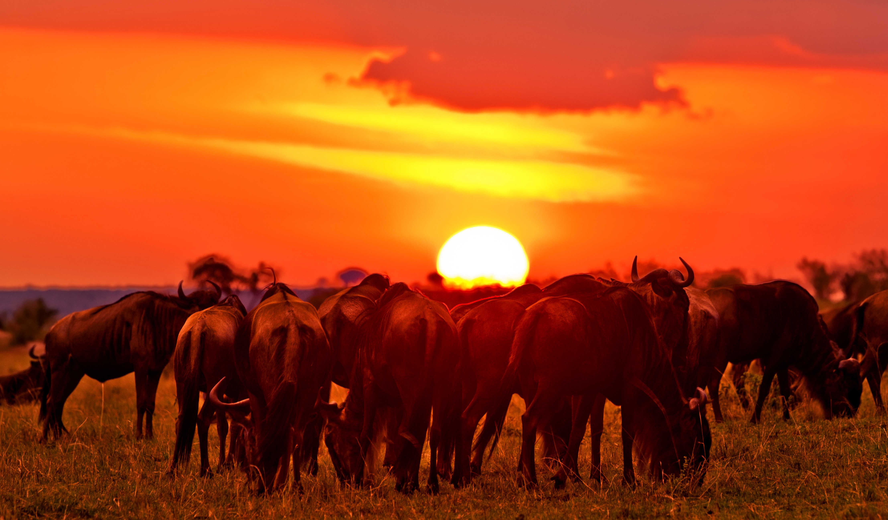
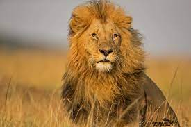
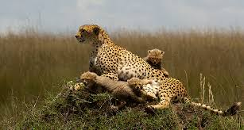
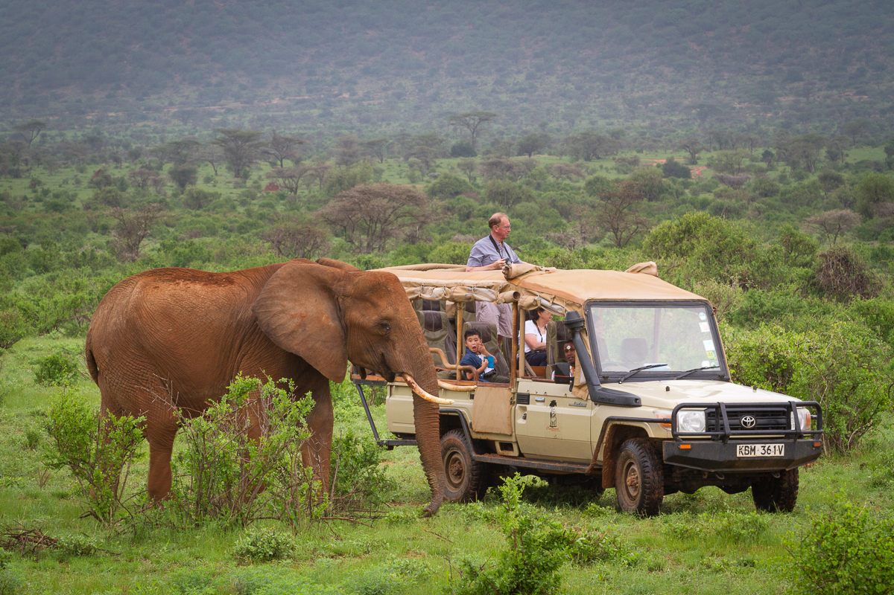
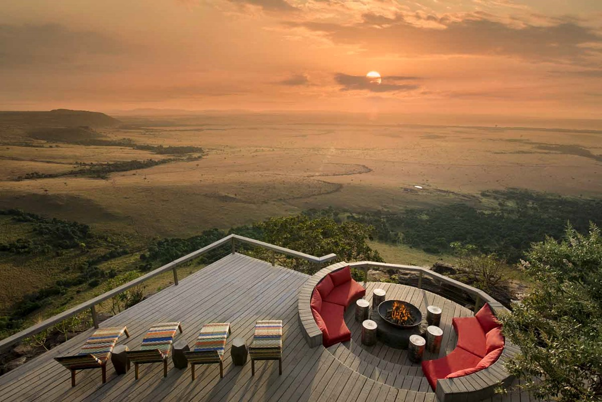

Hello, welcome to Mali kale Kenya!

Day 1: MOMBASA fly NAIROBI drive to MASAI MARA (Nairobi to Masai Mara – 265kms – Approx. 5/6kms)
Meal plan: Breakfast, lunch, dinner
Early pick up from your Kenya Coast beach resort for a transfer
to Mombasa airport. 0800hrs: Depart on Kenya Airways to Nairobi
(1 Hour) 0900hrs: On arrival at Nairobi airport you are met by
our safari driver guide and vehicle. Proceed to the Masai Mara
on a scenic drive via the central highlands of Kenya with views
of local homesteads and subsistence crop farming. You shall stop
to view at the Great Rift Valley escarpment and other scenic
attractions. Drive is through Masai country along the floor of
the Rift valley Afternoon game viewing drive at the Masai Mara
game reserve.
Overnight at your Masai Mara safari lodge / tented camp.
Day 2: FULL DAY AT THE MASAI MARA
Meal Plan: Breakfast, Lunch, Dinner
Today shall be a game viewing extravaganza! Masai Mara Game
reserve remains the most exciting wildlife eco-system in the
Natural world. It hosts to highest and most varied concentration
of wild animals than any other wildlife park in the region. The
scenic appeal of the tree studded savannah plains, moderate
climate and diversity of wild game species makes it a one stop
shop for game viewing activities. We shall traverse the Masai
Mara reserve on a full day of unlimited game viewing drives
encountering the big five and more of the lesser game. Picnic
lunch shall be by the Mara river as we watch hippos & crocodiles
or maybe the great migration (July – October)
Overnight shall be at our Masai Mara safari lodge/ Tented camp


Day 3: MASAI MARA – LAKE NAKURU (280 kms, Appx. 4/5 hrs)
Meal Plan: Breakfast, Lunch, Dinner
Early morning game spotting drive to catch the sunrise and
wildlife and scenery. Later depart Masai Mara and proceed to
Lake Nakuru national park. There shall be stops to view the
fresh water Lake Naivasha and the alkaline Lake Elmenteita. Game
and bird watching drives around the Lake Nakuru national park.
Hundreds of thousands of flamingos canopy the shallow edges of
the Lake Nakuru while pelicans and other bird species will be
seen. The national park hosts both the black and white rhino
together with warthog, antelope, baboon and many more animal
species. Flamingo ( Lesser and Greater ), White Rhino, Zebra,
Waterbucks, waterfalls: Makali, unique vegetation about 550
different plant species, Mammals 56 different species and
terrestrial birds numbering 450 species in total.
Overnight at a Lake Nakuru lodge / tented camp.
Day 4: LAKE NAKURU – SAMBURU (320 kms – Approx. 5 hrs)
Meal Plan:Breakfast, Lunch, Dinner.
Day begins with an early short game and bird viewing drive.
Proceed to Samburu game reserve located at the arid frontier
district of Kenya. This is the most scenic and dramatic day of
our Kenya safari journey. The drive is via the edges of the Rift
Valley escarpment, the central highlands and on to the arid
region of Northern Kenya. There shall be a stop to view the
Thompsons falls at Nyahururu. Afternoon game viewing drive at
the Samburu game reserve.
Elephants, Giraffe, Zebras, Warthog and Antelopes .
Overnight at your Samburu game reserve safari lodge / tented
camp.


Day 5: SAMBURU GAME RESERVE
Meal plan: Breakfast, Lunch, Dinner
Day spent at the Samburu game reserve! Start the day on an early
morning game viewing drive. Game spotting shall be concentrated
along the Ewaso Nyiro River,which is the lifeline of this
semi-arid game reserve. We shall look out for Oryx, Reticulated
Giraffe, Grevy’s Zebra, Somali ostrich, Lion, Elephant, Buffalo
and many more.
Overnight at your Samburu game reserve safari lodge/ tented
camp.
Day 6: SAMBURU – MT. KENYA – NAIROBI (Samburu to Nairobi 320 km, Appr. 6 hrs with lunch stop)
Meal plan: Breakfast, lunch, dinner
Day begins with an early short game and bird viewing drive.
Proceed to Samburu game reserve located at the arid frontier
district of Kenya. This is the most scenic and dramatic day of
our Kenya safari journey. The drive is via the edges of the Rift
Valley escarpment, the central highlands and on to the arid
region of Northern Kenya. There shall be a stop to view the
Thompsons falls at Nyahururu. Afternoon game viewing drive at
the Samburu game reserve.
Elephants, Giraffe, Zebras, Warthog and Antelopes .
Overnight at your Samburu game reserve safari lodge / tented
camp.
